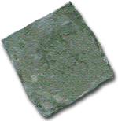

Coin Production
Coin Production

Coin Production

Click on this coin blank to strike it
BLANKS
The striking of a coin between dies was the end of a long process. Precious metal of the correct alloy needed to be produced, then turned into blanks. Ingots were beaten flat into sheets, and the blanks cut out with shears or with a tool like a pastry cutter.
Some blanks were created round by being sawn off a circular ingot; or by sieving molten metal to produce round blobs or discs. These techniques required extra work with the hammer to ensure the blanks were properly thin and round.
DIES
Dies were made of iron, with steel faces. Surviving medieval examples show that the two sorts of die, upper and lower, had different shapes. The lower die was more solid, and had a spike on the bottom so it could be embedded into a stable surface.
The upper die, which was held in the hand, was lighter and thinner, and hammer-blows soon gave its top a mushroom-like appearance. Because the upper die took the brunt of the blow, it usually carried the less important design, with the front design on the lower die.
ABOVE: Silver penny of Ethelred II, King of England, about AD 1010
Then click it again to trim it to size
Find out more about coin production below
untrimmed: CM 1935-11-19-485, 24mm; trimmed: CM 1935-11-19-484, 20mm
Iron Dies for silver pennies of Edward III, King of England, AD 1327-77
CM Die 318 and 334, 70mm and 60 mm